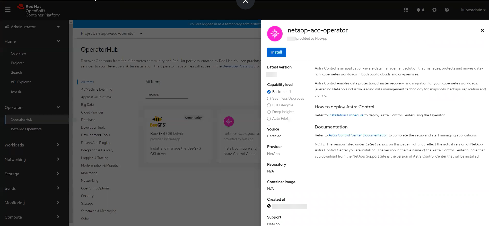
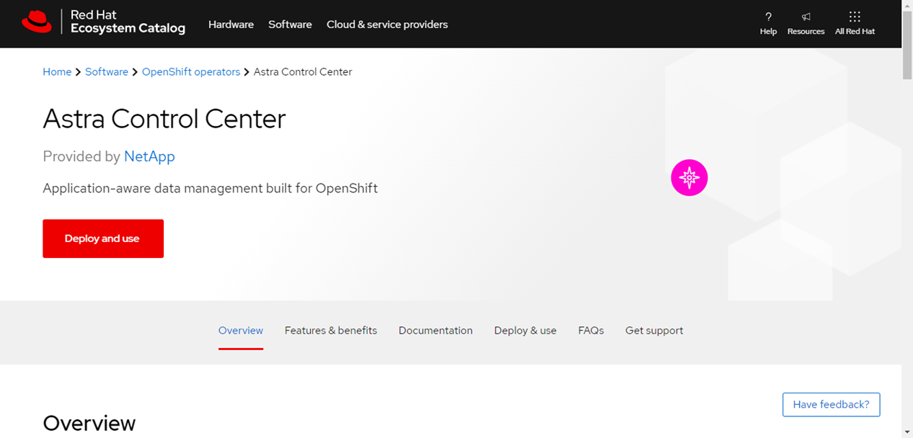
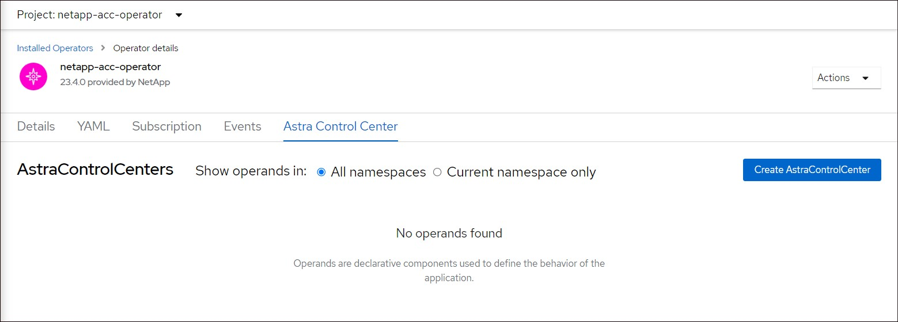

Release notes
Release notes
Install Astra Control Center using OpenShift OperatorHub
 Suggest changes
Suggest changes
If you use Red Hat OpenShift, you can install Astra Control Center using the Red Hat certified operator. Use this procedure to install Astra Control Center from the Red Hat Ecosystem Catalog or using the Red Hat OpenShift Container Platform.
After you complete this procedure, you must return to the installation procedure to complete the remaining steps to verify installation success and log on.
-
Environmental prerequisites met: Before you begin installation, prepare your environment for Astra Control Center deployment.
-
Healthy cluster operators and API services:
-
From your OpenShift cluster, ensure all cluster operators are in a healthy state:
oc get clusteroperators -
From your OpenShift cluster, ensure all API services are in a healthy state:
oc get apiservices
-
-
FQDN address: Obtain an FQDN address for Astra Control Center in your data center.
-
Openshift Permissions: Obtain the necessary permissions and access to the Red Hat OpenShift Container Platform to perform the installation steps described.
-
cert manager configured: If a cert manager already exists in the cluster, you need to perform some prerequisite steps so that Astra Control Center does not install its own cert manager. By default, Astra Control Center installs its own cert manager during installation.
-
Kubernetes ingress controller: If you have a Kubernetes ingress controller that manages external access to services, such as load balancing in a cluster, you need to set it up for use with Astra Control Center:
-
Create the operator namespace:
oc create namespace netapp-acc-operator
-
Complete setup for your ingress controller type.
-
Download and extract Astra Control Center
-
Go to the Astra Control Center downloads page on the NetApp Support Site.
-
Download the bundle containing Astra Control Center (
astra-control-center-[version].tar.gz). -
(Recommended but optional) Download the certificates and signatures bundle for Astra Control Center (
astra-control-center-certs-[version].tar.gz) to verify the signature of the bundle:tar -vxzf astra-control-center-certs-[version].tar.gzopenssl dgst -sha256 -verify certs/AstraControlCenter-public.pub -signature certs/astra-control-center-[version].tar.gz.sig astra-control-center-[version].tar.gzThe output will show
Verified OKafter successful verification. -
Extract the images from the Astra Control Center bundle:
tar -vxzf astra-control-center-[version].tar.gz
Install the NetApp Astra kubectl plugin
You can use the NetApp Astra kubectl command line plugin to push images to a local Docker repository.
NetApp provides plugin binaries for different CPU architectures and operating systems. You need to know which CPU and operating system you have before you perform this task.
-
List the available NetApp Astra kubectl plugin binaries, and note the name of the file you need for your operating system and CPU architecture:

The kubectl plugin library is part of the tar bundle and is extracted into the folder kubectl-astra.ls kubectl-astra/ -
Move the correct binary into the current path and rename it to
kubectl-astra:cp kubectl-astra/<binary-name> /usr/local/bin/kubectl-astra
Add the images to your local registry
-
Complete the appropriate step sequence for your container engine:
-
Change to the root directory of the tarball. You should see this file and directory:
acc.manifest.bundle.yaml
acc/ -
Push the package images in the Astra Control Center image directory to your local registry. Make the following substitutions before running the
push-imagescommand:-
Replace <BUNDLE_FILE> with the name of the Astra Control bundle file (
acc.manifest.bundle.yaml). -
Replace <MY_FULL_REGISTRY_PATH> with the URL of the Docker repository; for example, "https://<docker-registry>".
-
Replace <MY_REGISTRY_USER> with the user name.
-
Replace <MY_REGISTRY_TOKEN> with an authorized token for the registry.
kubectl astra packages push-images -m <BUNDLE_FILE> -r <MY_FULL_REGISTRY_PATH> -u <MY_REGISTRY_USER> -p <MY_REGISTRY_TOKEN>
-
-
Change to the root directory of the tarball. You should see this file and directory:
acc.manifest.bundle.yaml
acc/ -
Log in to your registry:
podman login <YOUR_REGISTRY> -
Prepare and run one of the following scripts that is customized for the version of Podman you use. Substitute <MY_FULL_REGISTRY_PATH> with the URL of your repository that includes any sub-directories.
Podman 4export REGISTRY=<MY_FULL_REGISTRY_PATH> export PACKAGENAME=acc export PACKAGEVERSION=23.04.2-7 export DIRECTORYNAME=acc for astraImageFile in $(ls ${DIRECTORYNAME}/images/*.tar) ; do astraImage=$(podman load --input ${astraImageFile} | sed 's/Loaded image: //') astraImageNoPath=$(echo ${astraImage} | sed 's:.*/::') podman tag ${astraImageNoPath} ${REGISTRY}/netapp/astra/${PACKAGENAME}/${PACKAGEVERSION}/${astraImageNoPath} podman push ${REGISTRY}/netapp/astra/${PACKAGENAME}/${PACKAGEVERSION}/${astraImageNoPath} donePodman 3export REGISTRY=<MY_FULL_REGISTRY_PATH> export PACKAGENAME=acc export PACKAGEVERSION=23.04.2-7 export DIRECTORYNAME=acc for astraImageFile in $(ls ${DIRECTORYNAME}/images/*.tar) ; do astraImage=$(podman load --input ${astraImageFile} | sed 's/Loaded image: //') astraImageNoPath=$(echo ${astraImage} | sed 's:.*/::') podman tag ${astraImageNoPath} ${REGISTRY}/netapp/astra/${PACKAGENAME}/${PACKAGEVERSION}/${astraImageNoPath} podman push ${REGISTRY}/netapp/astra/${PACKAGENAME}/${PACKAGEVERSION}/${astraImageNoPath} done
The image path the script creates should resemble the following, depending on your registry configuration: https://netappdownloads.jfrog.io/docker-astra-control-prod/netapp/astra/acc/23.04.2-7/image:version
Find the operator install page
-
Complete one of the following procedures to access the operator install page:
-
From Red Hat Openshift web console:
-
Log in to the OpenShift Container Platform UI.
-
From the side menu, select Operators > OperatorHub.
-
Search for and select the NetApp Astra Control Center operator.

-
-
From Red Hat Ecosystem Catalog:
-
Select the NetApp Astra Control Center operator.
-
Select Deploy and Use.
-

-
Install the operator
-
Complete the Install Operator page and install the operator:
The operator will be available in all cluster namespaces. -
Select the operator namespace or
netapp-acc-operatornamespace will be created automatically as part of the operator installation. -
Select a manual or automatic approval strategy.
Manual approval is recommended. You should only have a single operator instance running per cluster. -
Select Install.
If you selected a manual approval strategy, you will be prompted to approve the manual install plan for this operator.
-
-
From the console, go to the OperatorHub menu and confirm that the operator installed successfully.
Install Astra Control Center
-
From the console within the Astra Control Center tab of the Astra Control Center operator, select Create AstraControlCenter.
 -
Complete the
Create AstraControlCenterform field:-
Keep or adjust the Astra Control Center name.
-
Add labels for the Astra Control Center.
-
Enable or disable Auto Support. Retaining Auto Support functionality is recommended.
-
Enter the Astra Control Center FQDN or IP address. Do not enter
http://orhttps://in the address field. -
Enter the Astra Control Center version; for example, 23.04.2-7.
-
Enter an account name, email address, and admin last name.
-
Choose a volume reclaim policy of
Retain,Recycle, orDelete. The default value isRetain. -
Select the scaleSize of the installation.
By default, Astra will use High Availability (HA) scaleSizeofMedium, which deploys most services in HA and deploys multiple replicas for redundancy. WithscaleSizeasSmall, Astra will reduce the number of replicas for all services except for essential services to reduce consumption. -
Select the ingress type:
-
Generic(ingressType: "Generic") (Default)Use this option when you have another ingress controller in use or would prefer to use your own ingress controller. After Astra Control Center is deployed, you will need to configure the ingress controller to expose Astra Control Center with a URL.
-
AccTraefik(ingressType: "AccTraefik")Use this option when you would prefer not to configure an ingress controller. This deploys the Astra Control Center
traefikgateway as a Kubernetes "LoadBalancer" type service.Astra Control Center uses a service of the type "LoadBalancer" (
svc/traefikin the Astra Control Center namespace), and requires that it be assigned an accessible external IP address. If load balancers are permitted in your environment and you don't already have one configured, you can use MetalLB or another external service load balancer to assign an external IP address to the service. In the internal DNS server configuration, you should point the chosen DNS name for Astra Control Center to the load-balanced IP address.
For details about the service type of "LoadBalancer" and ingress, refer to Requirements.
-
-
In Image Registry, enter your local container image registry path. Do not enter
http://orhttps://in the address field. -
If you use an image registry that requires authentication, enter the image secret.
If you use a registry that requires authentication, create a secret on the cluster. -
Enter the admin first name.
-
Configure resources scaling.
-
Provide the default storage class.
If a default storage class is configured, ensure that it is the only storage class that has the default annotation. -
Define CRD handling preferences.
-
-
Select the YAML view to review the settings you have selected.
-
Select
Create.
Create a registry secret
If you use a registry that requires authentication, create a secret on the Openshift cluster and enter the secret name in the Create AstraControlCenter form field.
-
Create a namespace for the Astra Control Center operator:
oc create ns [netapp-acc-operator or custom namespace]
-
Create a secret in this namespace:
oc create secret docker-registry astra-registry-cred n [netapp-acc-operator or custom namespace] --docker-server=[your_registry_path] --docker username=[username] --docker-password=[token]
Astra Control supports Docker registry secrets only. -
Complete the remaining fields in the Create AstraControlCenter form field.
What's next
Complete the remaining steps to verify that Astra Control Center installed successfully, set up an ingress controller (optional), and log in to the UI. Additionally, you will need to perform setup tasks after completing installation.